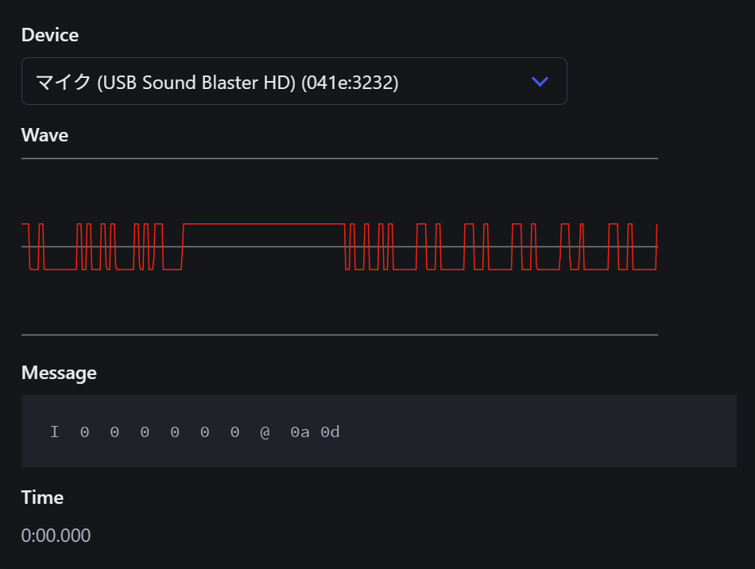

Browser Timer Display
ブラウザをスタックタイマーのディスプレイにできるツールです。
使用法
スタックタイマーをPCやスマートフォンに接続してください。 スタックタイマーをマイクとして接続する必要があります。 必要なコネクタなどは次の記事を参照してください。
次の環境で動作することを確認しています。
- スタックタイマーから3.5mmオーディオプラグ
- Speed Stacks Pro Timer G5
- Speed Stacks タイマーディスプレイケーブル
- Windows
- Windows 11
- Google Chrome
- iPhone
- Apple USB-C - 3.5 mmヘッドフォンジャックアダプタ
- YOUZIPPER ユージッパー 変換アダプター 3極→4極 150mm P-34G
- iPhone 16 Pro
- iOS 26.1
- Google Chrome or Safari
「Connect」ボタンを押して、マイクの使用を許可してください。 一度拒否した場合には、ブラウザの設定から許可してください。
スタックタイマーの電源を入れてもタイムが表示されない場合は、「Select Device」から、スタックタイマーを接続したデバイスを選択してください。 次の画像のような波形が表示される状態が正常です。

スマートフォンでは「ホーム画面に追加」をしておくと便利です。